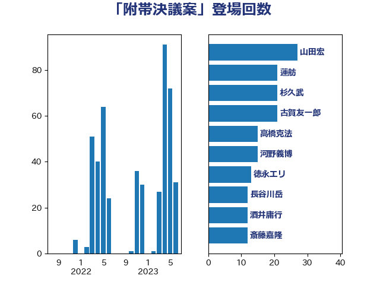

単語「附帯決議案」

| 山田宏 | 自由民主党 | 27 回 |
| 蓮舫 | 立憲民主党 | 21 回 |
| 杉久武 | 公明党 | 21 回 |
| 古賀友一郎 | 自由民主党 | 21 回 |
| 高橋克法 | 自由民主党 | 15 回 |
| 河野義博 | 公明党 | 15 回 |
| 徳永エリ | 立憲民主党 | 13 回 |
| 長谷川岳 | 自由民主党 | 12 回 |
| 酒井庸行 | 自由民主党 | 12 回 |
| 斎藤嘉隆 | 立憲民主党 | 12 回 |
| 山下雄平 | 自由民主党 | 12 回 |
| 川田龍平 | 立憲民主党 | 11 回 |
| 石橋通宏 | 立憲民主党 | 10 回 |
| 鶴保庸介 | 自由民主党 | 9 回 |
| 豊田俊郎 | 自由民主党 | 9 回 |
| 牧山ひろえ | 立憲民主党 | 9 回 |
| 吉川沙織 | 立憲民主党 | 9 回 |
| 森屋隆 | 立憲民主党 | 7 回 |
| 鎌田さゆり | 立憲民主党 | 6 回 |
| 落合貴之 | 立憲民主党 | 6 回 |
| 矢倉克夫 | 公明党 | 6 回 |
| 松沢成文 | 日本維新の会 | 6 回 |
| 平木大作 | 公明党 | 6 回 |
| 山崎誠 | 立憲民主党 | 6 回 |
| 佐々木さやか | 公明党 | 6 回 |
| 野田国義 | 立憲民主党 | 5 回 |
| 熊谷裕人 | 立憲民主党 | 5 回 |
| 小沢雅仁 | 立憲民主党 | 5 回 |
| 稲富修二 | 立憲民主党 | 4 回 |
| 田名部匡代 | 立憲民主党 | 4 回 |
| 横沢高徳 | 立憲民主党 | 4 回 |
| 小野泰輔 | 日本維新の会 | 4 回 |
| 小沼巧 | 立憲民主党 | 4 回 |
| 青木愛 | 立憲民主党 | 3 回 |
| 青木一彦 | 自由民主党 | 3 回 |
| 阿達雅志 | 自由民主党 | 3 回 |
| 道下大樹 | 立憲民主党 | 3 回 |
| 谷田川元 | 立憲民主党 | 3 回 |
| 舟山康江 | 国民民主党 | 3 回 |
| 田島麻衣子 | 立憲民主党 | 3 回 |
| 滝沢求 | 自由民主党 | 3 回 |
| 源馬謙太郎 | 立憲民主党 | 3 回 |
| 浅野哲 | 国民民主党 | 3 回 |
| 櫻井周 | 立憲民主党 | 3 回 |
| 杉尾秀哉 | 立憲民主党 | 3 回 |
| 山岸一生 | 立憲民主党 | 3 回 |
| 堤かなめ | 立憲民主党 | 3 回 |
| 古賀之士 | 立憲民主党 | 3 回 |
| 三浦信祐 | 公明党 | 3 回 |
| 長浜博行 | 無所属 | 2 回 |
| 金子恵美 | 立憲民主党 | 2 回 |
| 野間健 | 立憲民主党 | 2 回 |
| 緑川貴士 | 立憲民主党 | 2 回 |
| 米山隆一 | 立憲民主党 | 2 回 |
| 神谷裕 | 立憲民主党 | 2 回 |
| 神津たけし | 立憲民主党 | 2 回 |
| 湯原俊二 | 立憲民主党 | 2 回 |
| 梅谷守 | 立憲民主党 | 2 回 |
| 川合孝典 | 国民民主党 | 2 回 |
| 岡本あき子 | 立憲民主党 | 2 回 |
| 山田勝彦 | 立憲民主党 | 2 回 |
| 宮本徹 | 日本共産党 | 2 回 |
| 大河原まさこ | 立憲民主党 | 2 回 |
| 塩村あやか | 立憲民主党 | 2 回 |
| 城井崇 | 立憲民主党 | 2 回 |
| 中谷一馬 | 立憲民主党 | 2 回 |
| 中島克仁 | 立憲民主党 | 2 回 |
| 階猛 | 立憲民主党 | 1 回 |
| 阿部司 | 日本維新の会 | 1 回 |
| 鈴木庸介 | 立憲民主党 | 1 回 |
| 美延映夫 | 日本維新の会 | 1 回 |
| 石垣のりこ | 立憲民主党 | 1 回 |
| 石井苗子 | 日本維新の会 | 1 回 |
| 生稲晃子 | 自由民主党 | 1 回 |
| 熊田裕通 | 自由民主党 | 1 回 |
| 渡辺創 | 立憲民主党 | 1 回 |
| 清水貴之 | 日本維新の会 | 1 回 |
| 水野素子 | 立憲民主党 | 1 回 |
| 森田俊和 | 立憲民主党 | 1 回 |
| 柚木道義 | 立憲民主党 | 1 回 |
| 杉本和巳 | 日本維新の会 | 1 回 |
| 末次精一 | 立憲民主党 | 1 回 |
| 新垣邦男 | 立憲民主党 | 1 回 |
| 小西洋之 | 立憲民主党 | 1 回 |
| 小川淳也 | 立憲民主党 | 1 回 |
| 小宮山泰子 | 立憲民主党 | 1 回 |
| 宮崎政久 | 自由民主党 | 1 回 |
| 守島正 | 日本維新の会 | 1 回 |
| 奥野総一郎 | 立憲民主党 | 1 回 |
| 太栄志 | 立憲民主党 | 1 回 |
| 大石あきこ | れいわ新選組 | 1 回 |
| 吉田統彦 | 立憲民主党 | 1 回 |
| 勝部賢志 | 立憲民主党 | 1 回 |
| 伊藤俊輔 | 立憲民主党 | 1 回 |
| 今枝宗一郎 | 自由民主党 | 1 回 |
| 三木圭恵 | 日本維新の会 | 1 回 |